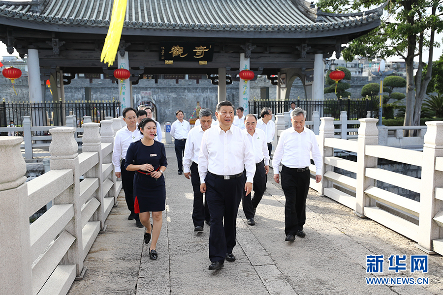
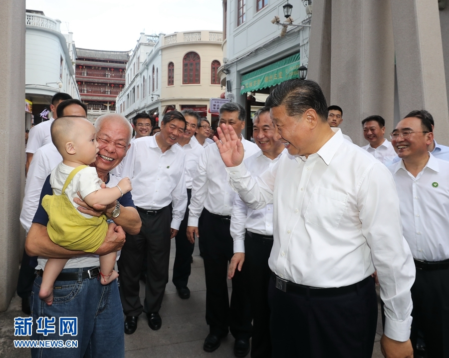
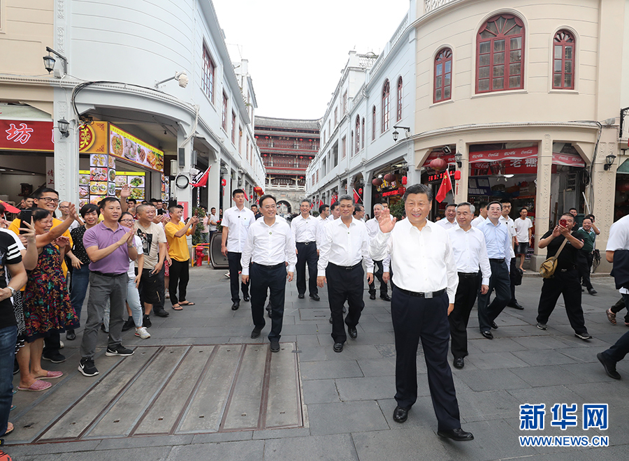
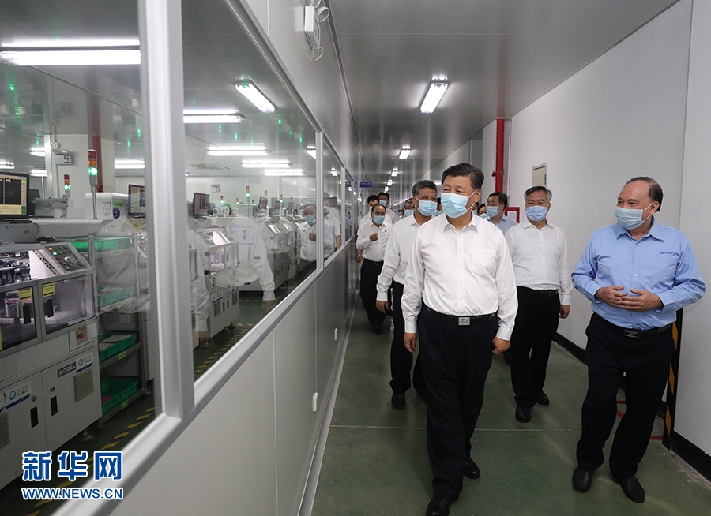
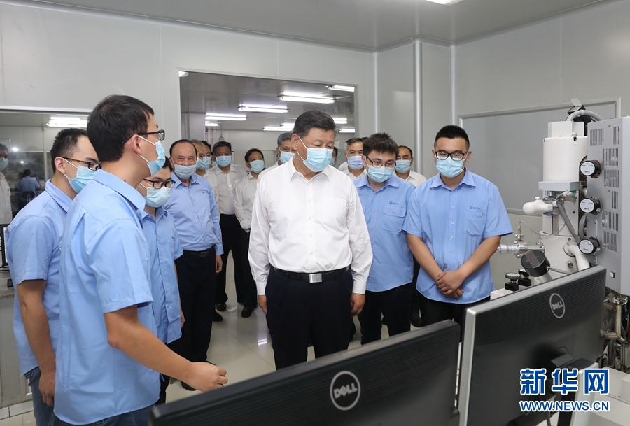
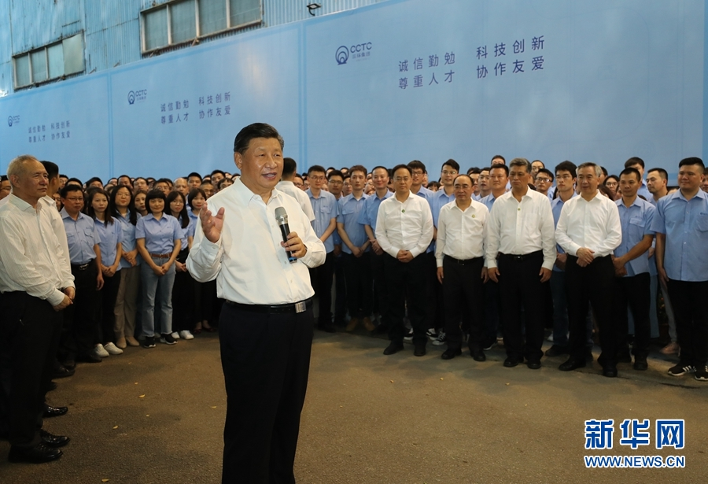
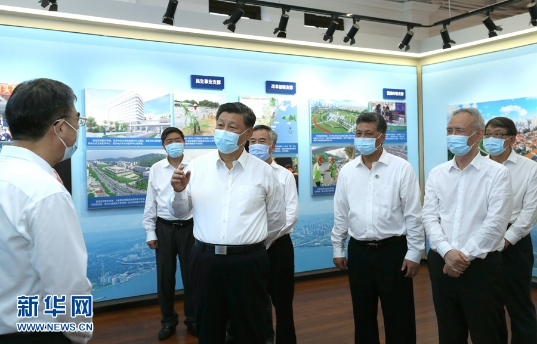
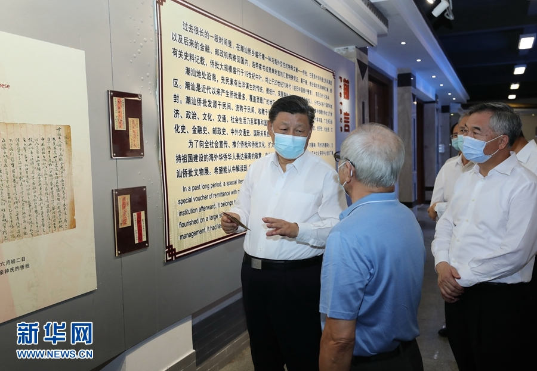
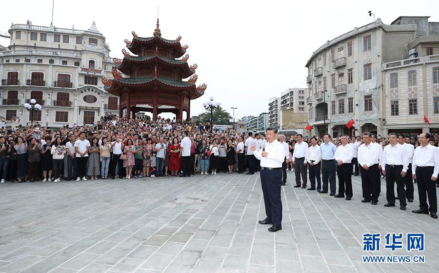

新华社广州10月15日电 中共中央总书记、国家主席、中央军委主席习近平近日在广东考察时强调，要坚决贯彻党中央战略部署，坚持新发展理念，坚持高质量发展，进一步解放思想、大胆创新、真抓实干、奋发进取，以更大魄力、在更高起点上推进改革开放，在推进粤港澳大湾区建设、推动更高水平对外开放、推动形成现代化经济体系、加强精神文明建设、抓好生态文明建设、保障和改善民生等方面展现新的更大作为，努力在全面建设社会主义现代化国家新征程中走在全国前列、创造新的辉煌。
金秋时节，南粤大地，一派生机勃勃。10月12日至13日，习近平在中共中央政治局委员、广东省委书记李希和省长马兴瑞陪同下，先后来到潮州、汕头等地，深入文物保护单位、历史文化街区、企业等，就统筹推进常态化疫情防控和经济社会发展工作、深化改革开放、谋划“十四五”时期经济社会发展等进行调研。

10月12日至13日，中共中央总书记、国家主席、中央军委主席习近平在广东考察。这是12日下午，习近平在潮州市察看广济桥，了解桥梁历史文化特色，听取修复保护情况介绍。 新华社记者 鞠鹏 摄
12日下午，习近平来到潮州市考察。位于潮州古城东门外的广济桥始建于南宋年间，横跨韩江两岸，风格独特，集梁桥、浮桥、拱桥于一体，被誉为“世界上最早的启闭式桥梁”。习近平沿桥步行，察看桥亭、浮桥，眺望韩江两岸风貌，了解桥梁历史文化特色，听取广济桥修复保护情况介绍。习近平强调，广济桥历史上几经重建和修缮，凝聚了不同时期劳动人民的匠心和智慧，具有重要的历史、科学、艺术价值，是潮州历史文化的重要标志。要珍惜和保护好这份宝贵的历史文化遗产，不能搞过度修缮、过度开发，尽可能保留历史原貌。要抓好韩江流域综合治理，让韩江秀水长清。

10月12日至13日，中共中央总书记、国家主席、中央军委主席习近平在广东考察。这是12日下午，习近平在潮州古城牌坊街考察时，同群众亲切交流。 新华社记者 王晔 摄
随后，习近平步行穿过广济桥畔的广济门，沿石阶登上广济楼。在楼上展厅里，习近平察看潮州非遗文化作品，观看非遗项目传承人代表的现场制作演示，并同他们亲切交流，了解潮州传统技艺传承情况。习近平指出，潮州文化具有鲜明的地域特色，是岭南文化的重要组成部分，是中华文化的重要支脉。以潮绣、潮瓷、潮雕、潮塑、潮剧和工夫茶、潮州菜等为代表的潮州非物质文化遗产，是中华文化的瑰宝。要加强非物质文化遗产保护和传承，积极培养传承人，让非物质文化遗产绽放出更加迷人的光彩。

10月12日至13日，中共中央总书记、国家主席、中央军委主席习近平在广东考察。这是12日下午，习近平在潮州古城牌坊街考察时，向群众挥手致意。 新华社记者 王晔 摄
习近平来到二层檐廊，举目远眺，韩江水阔，长桥卧波。在听取广济楼历史和古城修复保护情况汇报后，习近平强调，包括广济桥、广济楼在内的潮州古城比较完好地保留了下来，实属难得，弥足珍贵。在改造老城、开发新城过程中，要保护好城市历史文化遗存，延续城市文脉，使历史和当代相得益彰。
牌坊街是潮州市的文化地标之一，23座古牌坊连接起51条古街巷。习近平沿街步行，了解潮州市修复保护历史文化街区、打造优秀传统文化集结地等情况，并走进街边商铺，同店员、顾客热情交谈，向他们询问复商复市怎么样、生产生活还有什么困难等。习近平指出，当前我国疫情防控取得重大战略成果，经济社会正常秩序基本恢复，但外防输入、内防反弹压力还很大。要继续严格执行各项常态化疫情防控措施，为最终战胜疫情而共同努力。
沿街挤满了闻讯赶来的群众，大家欢呼“总书记好！”“总书记辛苦了！”习近平频频向大家挥手致意。他亲切地对大家说，潮州历史悠久、人文荟萃，是国家历史文化名城，很多人都慕名前来参观旅游。要保护好具有历史文化价值的老城区，彰显城市特色，增强文化旅游内涵，让人们受到更多教育。40多年前我来过潮州，今天再次来到这里，看到潮州发展欣欣向荣，感到很欣慰。希望潮州广大干部群众抓住机遇，乘势而上，起而行之，把潮州建设得更加美丽！

10月12日至13日，中共中央总书记、国家主席、中央军委主席习近平在广东考察。这是12日下午，习近平在潮州市潮州三环（集团）股份有限公司生产车间考察。 新华社记者 王晔 摄

10月12日至13日，中共中央总书记、国家主席、中央军委主席习近平在广东考察。这是12日下午，习近平在潮州市潮州三环（集团）股份有限公司实验室，了解企业自主创新和产业升级等情况。 新华社记者 王晔 摄

10月12日至13日，中共中央总书记、国家主席、中央军委主席习近平在广东考察。这是12日下午，习近平在潮州市潮州三环（集团）股份有限公司，同企业员工亲切交流。 新华社记者 鞠鹏 摄
离开牌坊街，习近平来到潮州三环（集团）股份有限公司调研。50年来，这家企业坚持自主创新，不断推动产业升级，在电子元件、先进材料研发和生产上走在行业前列，一些产品产销量位居全球前列。疫情期间，企业在坚持严格疫情防控的同时，积极复工复产，产销量实现了逆势上扬。在公司展厅，习近平察看特色产品展示，详细询问产品应用、技术优势、市场销售等。他还走进实验室和生产车间，了解企业坚持自主创新、推动传统制造业转型升级以及开拓国内国际市场等情况。习近平强调，自主创新是增强企业核心竞争力、实现企业高质量发展的必由之路。希望你们聚焦国内短板产品，在自主研发上加倍努力，掌握更多核心技术、前沿技术，增强企业竞争和发展能力。面对世界百年未有之大变局，面对国内外发展环境发生的深刻复杂变化，我们要走一条更高水平的自力更生之路，实施更高水平的改革开放，加快构建以国内大循环为主体、国内国际双循环相互促进的新发展格局。大家要深刻领会党中央战略意图，在构建新发展格局这个主战场中选准自己的定位，发扬企业家精神，推动企业发展更上一层楼，为国家作出更大贡献。

10月12日至13日，中共中央总书记、国家主席、中央军委主席习近平在广东考察。这是13日下午，习近平在汕头市小公园开埠区汕头开埠文化陈列馆考察，了解汕头开埠历史、经济特区发展成就及下一步发展规划情况。 新华社记者 鞠鹏 摄
13日下午，习近平来到汕头市小公园开埠区考察调研。汕头自1860年开埠以来，见证了列强侵略中国的屈辱历史，也见证了改革开放以来经济特区的发展历程。习近平走进汕头开埠文化陈列馆，了解汕头开埠历史和经济特区发展成就，听取汕头市下一步发展规划情况汇报。习近平指出，汕头经济特区是改革开放后最早建立的经济特区之一。新时代改革开放的内涵、条件、要求同过去相比有很大不同。希望汕头深入调查研究，认真思考谋划，拿出能够真正解决问题的思路和举措来，路子对了，就要以功成不必在我的境界，久久为功。要充分利用建设粤港澳大湾区、共建“一带一路”等重大机遇，找准定位，扬长避短，以更大魄力、在更高起点上推进改革开放，在新时代经济特区建设中迎头赶上。

10月12日至13日，中共中央总书记、国家主席、中央军委主席习近平在广东考察。这是13日下午，习近平在汕头市小公园开埠区侨批文物馆考察，了解侨批历史和潮汕华侨文化。 新华社记者 王晔 摄
随后，习近平参观了具有潮汕侨乡特色的侨批文物馆。过去很长一段时间，海外华侨通过民间渠道将连带家书或简单附言的汇款凭证寄回国内，这些“侨批”成为研究近代华侨史的珍贵档案。习近平听取侨批历史和潮汕华侨文化介绍。他强调，“侨批”记载了老一辈海外侨胞艰难的创业史和浓厚的家国情怀，也是中华民族讲信誉、守承诺的重要体现。要保护好这些“侨批”文物，加强研究，教育引导人们不忘近代我国经历的屈辱史和老一辈侨胞艰难的创业史，并推动全社会加强诚信建设。潮汕地区是我国著名侨乡。汕头经济特区要根据新的实际做好“侨”的文章，加强海外华侨工作，引导和激励他们在支持和参与祖国现代化建设、弘扬中华文化、促进祖国和平统一、密切中外交流合作等方面发挥更大作用。
10月12日至13日，中共中央总书记、国家主席、中央军委主席习近平在广东考察。这是13日下午，习近平在汕头市小公园开埠区步行察看街区风貌时，向当地群众和游客挥手致意。 新华社记者 王晔 摄
10月12日至13日，中共中央总书记、国家主席、中央军委主席习近平在广东考察。这是13日下午，习近平在汕头市小公园开埠区，同商铺店员亲切交流，了解复商复市和常态化疫情防控情况。 新华社记者 鞠鹏 摄
汕头小公园开埠区，是目前我国保存最完好的开埠区之一。呈环形放射状格局的街道上，建有大片骑楼群。习近平步行察看街区风貌，听取当地开展开埠区修复改造、推进历史文化街区保育活化等情况介绍。习近平强调，现在我国经济社会发展很快，城市建设日新月异。越是这样越要加强历史文化街区保护，在加强保护的前提下开展城市基础设施建设，有机融入现代生活气息，让古老城市焕发新的活力。要引导人们认识到汕头经济特区的今天来之不易，从中感悟党的领导和我国社会主义制度的显著优越性，坚定中国特色社会主义道路自信、理论自信、制度自信、文化自信。

10月12日至13日，中共中央总书记、国家主席、中央军委主席习近平在广东考察。这是13日下午，习近平在汕头市小公园开埠区，同当地群众和游客亲切交流。 新华社记者 鞠鹏 摄
10月12日至13日，中共中央总书记、国家主席、中央军委主席习近平在广东考察。这是13日下午，习近平在汕头市小公园开埠区，同当地群众和游客亲切交流。 新华社记者 王晔 摄
当地群众和游客们见到总书记来了，争相围拢上来向总书记问好。习近平祝大家生活愉快、健康幸福。他指出，我国改革开放和经济特区的建设同大批心系乡梓、心系祖国的华侨是分不开的。我们即将全面建成小康社会、开启全面建设社会主义现代化国家新征程，向第二个百年奋斗目标进军。到本世纪中叶把我国建成富强民主文明和谐美丽的社会主义现代化强国，是海内外全体中华儿女的共同心愿。今年是经济特区建立40周年，我特地来汕头经济特区考察调研，就是要向国内外宣示，中国共产党领导中国人民将坚定不移走改革开放道路，奋发有为推进社会主义现代化建设，锲而不舍实现中华民族伟大复兴的中国梦。希望乡亲们携手努力，共同奋斗！
丁薛祥、刘鹤、陈希、何立峰和中央有关部门负责同志陪同考察。